A speculative fiction on our contemporary invaders
Abstract
The messenger in the Jellyfish Sea’s
The goat herder in the Kudzu Fields
The butterfly in the Miconia Forest
Conclusion (last paragraph)
Bibliography
The messenger in the Jellyfish Seas
Noah lived on a boat that was attached to a tree with a long metal chain, only a twenty-minute walk away from the beach. The tree was on the property of a good friend of his, thus he lived rent free. This was a blessing since Noah only had to get dinner on the table and pay a small fee for electricity to his friend.
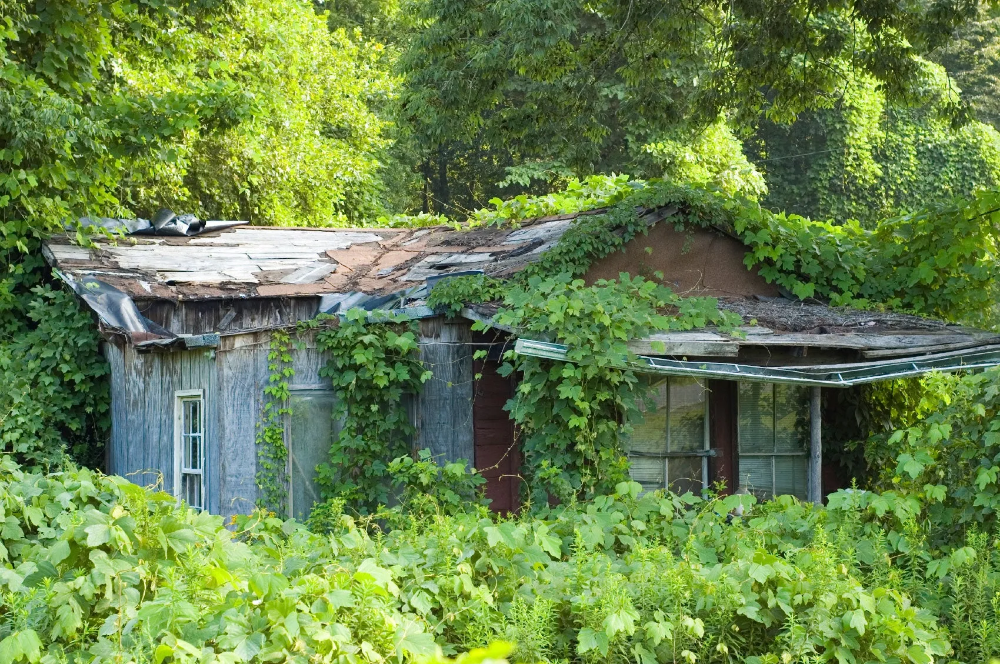
Kudzu covered shed (USA, 2008)
On his way to the beach, he usually got a cup of Kudzu blossom tea – not that there where many other affordable options –. Ever since the blooms became common, import products have seen a steep rise in prizes. His usual spot was a food truck of which the engine broke down. The owner was getting old and had decided to build some wooden walls around it with a corrugated sheet on top, just to give costumers some basic shelter. The owner had also decorated the shack with a combination of small, porcelain, geisha statues that were scattered around the establishment, seemingly random, and surprisingly high-quality pictures of jellyfish that where carefully framed and hung on the walls. He wasn’t sure about the geisha statues, but he could appreciate the pictures. During the evening shady folk would come, but during early mornings – which is usually when Noah passed by – it tended to be nearly deserted, maybe someone with business in the area but the Pueraria montana (Kudzu) made it hard to see the shack from a distance. Noah liked this shack, because from here you had the best view over the thousands of jellyfish that gathered in the bay.
“Morning!” Noah said whilst leaning his surfboard against the wall, “Can I have a Kudzu Blossom tea, please?” The owner mumbled something about early mornings and asked if he wanted the usual Honeysuckle blend. Noah confirmed, seated himself next to the makeshift window and looked at the other-worldly spectacle in the water. The economic damage of the jellyfish was nearly immeasurable. “The global spread of jellyfish hazards mirrors the pace of human imprint in the marine environment” - Sun-Hee Lee, Li-Chun Tseng, Yang Ho Yoon, Eduardo Ramirez-Romero, Jiang-Shiou Hwang, Juan Carlos Molinero (2023)
There had been countless warning signs, but it was simply never profitable enough to do something about it, and where would one start anyway? “Estimating the economic damage caused by jellyfish to fisheries in Korea” - Kim, Do Hoon & Seo, Ju-Nam & Yoon, Wonduk & Suh, Young-Sang (2012)
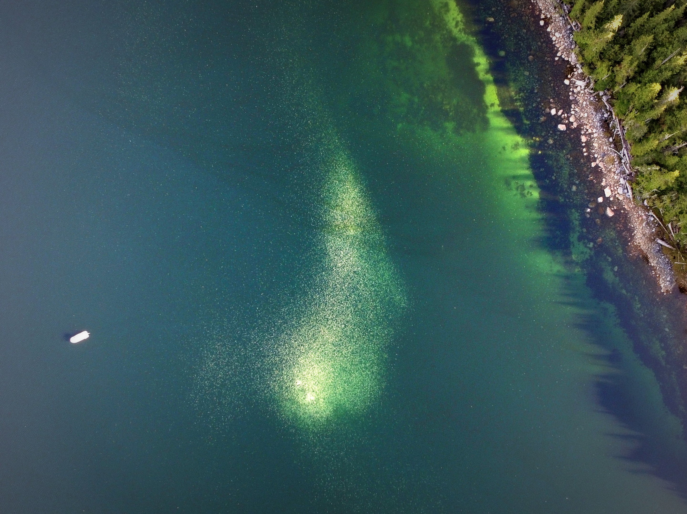
Drone shot of moon jellyfish bloom (Calvert Island, 2015)
When he looked at his tea, Noah noticed that a previous visitor of the shack had left a ripped-out page of Against the Anthropocene: Visual Culture and Environment Today by TJ Demos. One sentence was highlighted with a yellow marker: “”Anthropocene” rhetoric frequently acts as a mechanism of universalization, (..) which enables that military state-corporate apparatus to disavow responsibility for the differentiated impacts of climate change, effectively concealing the accountability behind the mounting eco-catastrophe. “The global spread of jellyfish hazards mirrors the pace of human imprint in the marine environment” - Sun-Hee Lee, Li-Chun Tseng, Yang Ho Yoon, Eduardo Ramirez-Romero, Jiang-Shiou Hwang, Juan Carlos Molinero (2023)
After mowing it over, Noah sighed, although aptly put, this wasn’t really news to him. Within this system without end, the ones with capital will act to preserve their growth and are able to control the narrative with their resources. Noah found the Capitalocene a much more fitting name when discussing the contemporary messes, directing the blame towards those who truly had an impact.“Anthropocene or Capitalocene?” - Jason W. Moore (2016)
“Oh well, nothing I can do about it.” he though. After finishing his tea, he decided to finally confront the owner about his peculiar decoration choices.
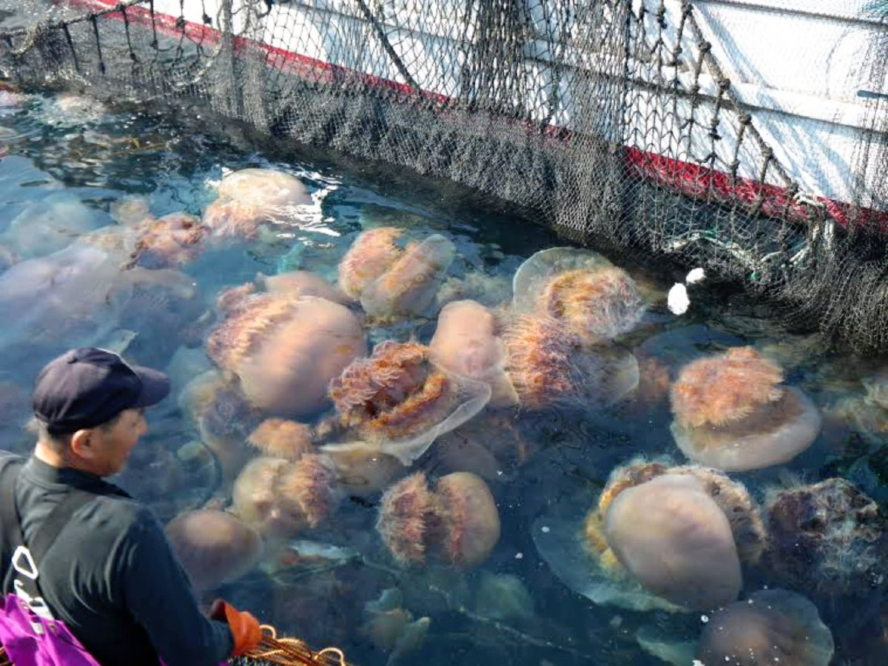
Nomurai jellyfish caught in a fishing net (Furuya, Japan, 2015).
Noah:
Sup, can I pay?
the owner:
Sure, that’ll be $2,50 please (the owner holds out a portable ATM)
Noah:
(pays) Btw, there has been something on my mind ever since I started coming here. Don’t get me wrong, I think the geisha’s and especially the jellyfish are great, but it is not your typical food truck decor. What’s up with that?
the owner:
Well you see, my family moved to Hawaii to work on the sugar cane plantations in 1885. After high school, I wanted to reconnect with my roots and moved to Japan, where I worked on a fishing ship for a couple of years. The Nemopilema nomurai jellyfish “blooms” – a temporary increase in jellyfish population – were becoming a monthly problem in the seas surrounding Japan at that time. “Temporal fluctuations in abundance and size of the giant jellyfish Nemopilema nomurai medusae in the northern East China Sea, 2006–2017” - Satoshi Kitajima, Toru Hasegawa, Koh Nishiuchi, Yoko Kiyomoto, Takeshi Taneda & Haruya Yamada (2020)
These creatures can get up to 2m in diameter and weigh up to 200kg. When a bloom occurred, they could completely fill our nets. In such a scenario, we had to be very careful, one mistake could make the whole boat give in under the weight of the Nomurai. To me, it was as if the ocean was angry at us, for murdering and displacing their children.
Since those days, the jellyfish have ingrained themselves into my being as the representation of the sea’s resilience, the serene protectors of our oceans, able to survive in some of the harshest environments that the ocean and humans have thrown at them, keeping a presence of life in places where others have failed and protecting these seas from their greatest threat, us. Even after death, by taking the carbon they used to grow into the deep ocean, they mitigate a significant portion of our emissions.And when it comes to the geishas, while I was there, I was in love with a girl back home and I collected them for her, but she had fallen for someone else in my absence, now they simply make me feel close to Japan. Just like the Kudzu.
Noah:
Those Nomurai sound like a dream. What was that about the Kudzu though?
the owner:
Well, the Kudzu originates from China and Japan, it might have even been taken here by one of my ancestors. (the owner laughs) The Kudzu came here around the same time as the wave of immigrants that my family was a part of One could say that the Kudzu and I have similar roots, we are both descendants of organisms that got displaced by the waves of the Capitolocene. “The global spread of jellyfish hazards mirrors the pace of human imprint in the marine environment” - Sun-Hee Lee, Li-Chun Tseng, Yang Ho Yoon, Eduardo Ramirez-Romero, Jiang-Shiou Hwang, Juan Carlos Molinero (2023)
“The global spread of jellyfish hazards mirrors the pace of human imprint in the marine environment” - Sun-Hee Lee, Li-Chun Tseng, Yang Ho Yoon, Eduardo Ramirez-Romero, Jiang-Shiou Hwang, Juan Carlos Molinero (2023)
Just like the Kudzu, we used to be labeled invasive in Hawaii, in the late 19th century the native Hawaiians and Japanese Americans living in Hawaii believed that their interests were in opposition, but trough struggle and a mutual oppressor, we were able to adapt to one another. “Temporal fluctuations in abundance and size of the giant jellyfish Nemopilema nomurai medusae in the northern East China Sea, 2006–2017” - Satoshi Kitajima, Toru Hasegawa, Koh Nishiuchi, Yoko Kiyomoto, Takeshi Taneda & Haruya Yamada (2020)
We are no longer considered invasive, I just wish we could achieve something similar with the Kudzu.
Noah:
I see, fascinating stuff! But I have to run, I’ll be late for
work. See ya!
Ten minutes later he arrived at another shack, although more professionally put together, clearly not meant to be there for an extended period. There was a sticker on the window that said: “Splash Delivery”. He walked in, greeted a young man behind the counter and asked for a new job. There was a document that had to be delivered to Ella on the big island (Hawaii).
The Splash Delivery service was a niche electric boat/surfboard company that would still be able to deliver small important packages and documents on a wind still day, in the middle of the bloom season. One of the perks of working for Splash Delivery was that you received an electric board that you could keep for as long as they worked there, which was the initial reason Noah had been drawn to the profession. A profession that thanked its whole existence to the blooms, as they made traditional means of sending packages overseas nearly impossible when they happened.
Getting the job had been surprisingly easy, as his reputation from the local surf spot had proceeded him. The only hassle had been a flyer about the company, which they had asked him to memorize. Although, primarily a pretty façade, riddled with greenwashing, one paragraph had always stuck with him. A paragraph copied from a study on the relation between human influence and jellyfish populations. “Temporal fluctuations in abundance and size of the giant jellyfish Nemopilema nomurai medusae in the northern East China Sea, 2006–2017” - Satoshi Kitajima, Toru Hasegawa, Koh Nishiuchi, Yoko Kiyomoto, Takeshi Taneda & Haruya Yamada (2020)
He considered it the only relevant information in the flyer: “Overall increase since the 1970s is correlated with global changes, including increased human activity along the coastline that could facilitate or amplify increases in jellyfish. These global changes include warming temperatures, which enhance production, feeding, and growth rates of jellyfish, overfishing of competitors of jellyfish, an increased supply of planktonic food for jellyfish associated with eutrophication of coastal waters, and the spread of hypoxia, to which jellyfish exhibit greater tolerance than most other metazoans.“ Noah always thought it was almost comical, how almost every major impact of the Capitolocene on the oceans, leads to more jellyfish.
As he reached the shore, the familiar sight of algae puddles, plastic thrash and washed-up jellyfish greeted him. “The global spread of jellyfish hazards mirrors the pace of human imprint in the marine environment” - Sun-Hee Lee, Li-Chun Tseng, Yang Ho Yoon, Eduardo Ramirez-Romero, Jiang-Shiou Hwang, Juan Carlos Molinero (2023) “The global spread of jellyfish hazards mirrors the pace of human imprint in the marine environment” - Sun-Hee Lee, Li-Chun Tseng, Yang Ho Yoon, Eduardo Ramirez-Romero, Jiang-Shiou Hwang, Juan Carlos Molinero (2023) Noah still remembered the first time he saw a bloom, back then the islanders just viewed it as a nuisance, but he thought the bloom had a mesmerizing beauty to it. It was an exceptionally warm morning in the late summer and his mother had brought him to the coast after she heard about it on the news. Box Jellyfish are known to appear near the coast during the new moon11, but this time was different, like clouds under the surface of the water, they invaded the coastal waters. Back then Noah and his mom still shared a glimmer of excitement for these animals. But over the years these blooms had become more and more frequent, and these days, for the entirety of early spring till late summer, the sea around the island had essentially become a slurry of jellyfish and plastic. Of course, he understood why the jellyfish are a huge problem for fisheries, trade, and transportation. All such concerns were clear to him, however, ultimately, the jellyfish sea was not something he concerned himself with any longer. Just like the Kudzu, the jellyfish were here to stay, like a serene, yet surreal dream, that never ends.
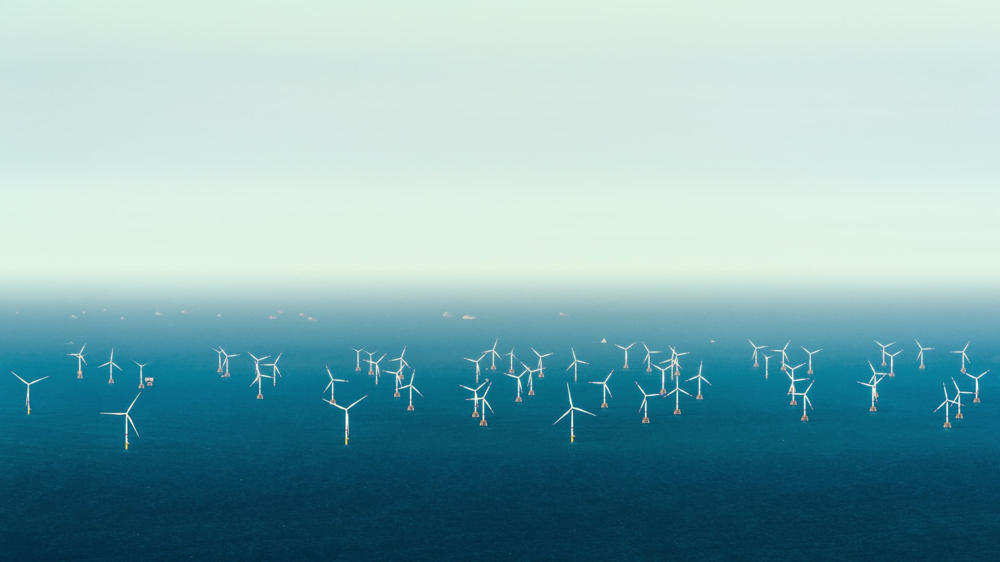
Wind turbines (North Sea, Netherlands, 2023)
The sea was calm, the only hurdle was the usual dodging and weaving around Box jellyfish. After a little while, the windmill parks on the horizon indicated that he was getting close to Maui. A huge chunk of the shallower waters north from Maui, had been transformed into a tranquil landscape of white giants. The locals weren’t happy about their arrival, as the windmills disrupted their landscape’s, but the momentum of green electricity was unstoppable, there was just too much money to be made in this blooming industry. Ultimately, the locals yielded under pressure from “green” lobby groups and the national government.
Looking down on the jellyfish that were floating around him, he spotted some Blue Sea Dragons (Glaucus Atlanticus). Noah had always loved these little snails that floated along the waves and could fit on his thumb. These little fellas seemed to be the real winner of the climate crisis. Now that the sea was filled to the brim with their favorite food, the little sea dragons could eat as much as they wanted. They lay their eggs on the abundance of floating plastic, carried by the ocean currents from the Pacific Garbage Patch to the seas surrounding Hawaii. Noah always felt like there was something to be learned from these organisms, the way they let themselves get carried by the current, only changing their course when necessary, making the best out of their given circumstances. Next to the sea slug, there are others that benefited from the excess of plastic in the oceans. This invasive force that was given shape by the Capitalocene has worked itself into the ocean’s ecosystems and together with the countless environmental and health hazards, it gave refuge to all kinds of organisms, using it like the sea slugs, to reproduce and disperse their descendants with the currents.“Temporal fluctuations in abundance and size of the giant jellyfish Nemopilema nomurai medusae in the northern East China Sea, 2006–2017” - Satoshi Kitajima, Toru Hasegawa, Koh Nishiuchi, Yoko Kiyomoto, Takeshi Taneda & Haruya Yamada (2020)
Hawaii.
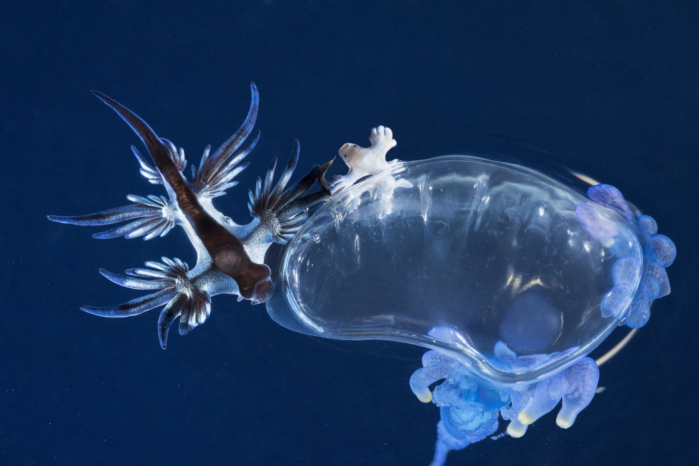
Glaucus Atlanticus eating a Portugese man o’ war (Hawaii, 2019)
The goat herder in the Kudzu Fields
Kudzu barn (Del Rio, USA, 2005)
Ella was staring at her tracking device with a stern face, it had never happened before that she had permanently lost a goat from her herd. One goat wondered off especially far, this stressed her out, as she had promised to lead the heard to the land of a new client today, and atop of all that, she had also ordered a new map. Since she didn’t have a permanent residence, she had to wait for the Splash Delivery guy at the beach around eight in the evening. All of this went through her mind as the blinking red dot moved slowly towards the north; at least that was in the right direction.
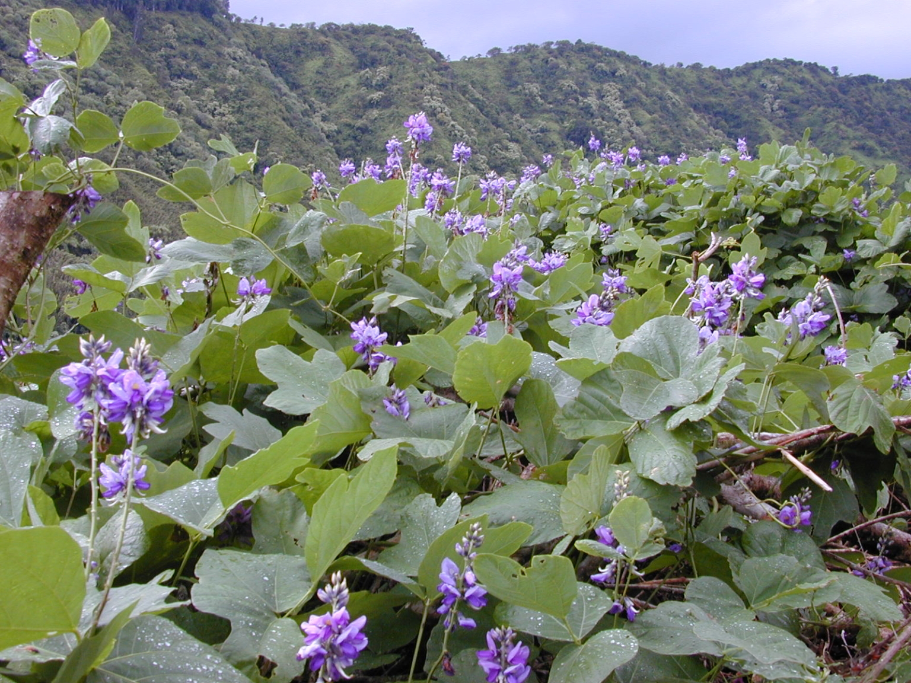
Blooming Kudzu (Hawaii, 2018)
She had been doing this job for five years now, traveling from farm to farm on the big island, letting her goats eat the Kudzu that was threatening to flood the farmlands. Sometimes she would sleep in the house or a shed of the farmers. When the weather was nice, she preferred to camp in a tent close to the goats amidst the Kudzu. Especially during the late summer, when the Kudzu blooms and their purple flowers released their grape-like scent. The goats loved to eat the flowers, but it was hard for her to look past the devastation this vine has caused.“Temporal fluctuations in abundance and size of the giant jellyfish Nemopilema nomurai medusae in the northern East China Sea, 2006–2017” - Satoshi Kitajima, Toru Hasegawa, Koh Nishiuchi, Yoko Kiyomoto, Takeshi Taneda & Haruya Yamada (2020)
This invasive vine that covered almost a third of Hawaii. A tentacular organism that changed her country up to the chemical composition of the soil. Not just drowning the native vegetation in its leaves, but also creating soil that favors the displaced over the native. The Kudzu is what they call a Nitrogen fixing plant, that sounds lovely of course, but as the native species have adapted for a harsher environment, they are not well equipped to make use of this abundance of nutrition, and they get outcompeted by unwanted guests.“Temporal fluctuations in abundance and size of the giant jellyfish Nemopilema nomurai medusae in the northern East China Sea, 2006–2017” - Satoshi Kitajima, Toru Hasegawa, Koh Nishiuchi, Yoko Kiyomoto, Takeshi Taneda & Haruya Yamada (2020)
Ella’s only solace was the fact that the Kudzu’s potential habitat range on the big island (which is the last refuge for many of the remaining native species) has primarily been occupied by invasive land cover for over a hundred years. (fig. 1b)
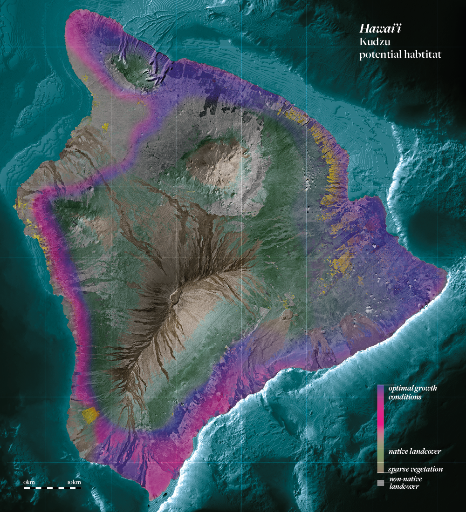
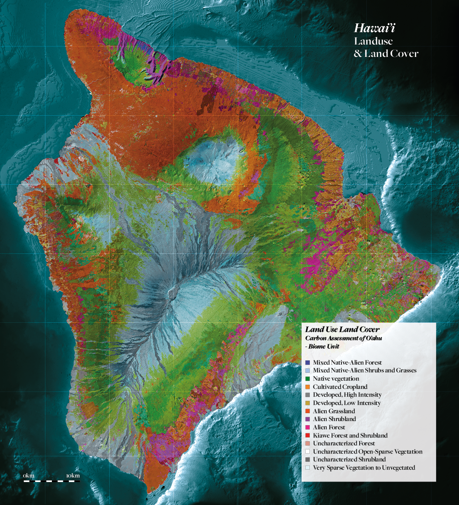
figure 1a. Kudzu habitat range, Hawaii // figure 1b. Hawaii, Natural and Working Lands Land cover, 2022
Ella:
Aloha! are you here to deliver my map?
Noah:
(laughs) Aloha! could be, Ella?
Ella:
Yes, that’s me!
Noah:
(removes a tube from his bag and hands it to Ella) May I ask why you would need a physical map? Wouldn’t a digital one be much more useful?
Ella:
I don’t really own a laptop and physical maps are much more convenient than the small screen on my phone.
Noah:
Do you need specific maps for you work?
Ella:
Well yes, I make a living by limiting the Kudzu with my goats, so maps on potential risk areas are quite essential. But this specific map displays the potential range of the Miconia Calvescens.
Miconia Calvescens (Hawaii)
Noah:
Oh you mean those giant plants with the huge, lustrous, purple bottomed leaves? I always feel like I am trippin when I go through a patch. (Noah laughs)
Ella:
Yup, they are labeled as a Noxious Weed and I guess they look cool, but don’t underestimate their impact, a Miconia Calvescens can grow from a seed to a mature tree in four years, which can produce about 20.000 seeds per year and those seeds can then remain viable for 18 or more years before sprouting, ingraining themselves into our “ecological memory”.“Temporal fluctuations in abundance and size of the giant jellyfish Nemopilema nomurai medusae in the northern East China Sea, 2006–2017” - Satoshi Kitajima, Toru Hasegawa, Koh Nishiuchi, Yoko Kiyomoto, Takeshi Taneda & Haruya Yamada (2020)
Because no native organism eats the miconia, they can outcompete native -and non-native- plant cover and form monospecific landscapes. Okay wait, let me unpack the maps you got me. (Ella places the maps onto the sand) “Temporal fluctuations in abundance and size of the giant jellyfish Nemopilema nomurai medusae in the northern East China Sea, 2006–2017” - Satoshi Kitajima, Toru Hasegawa, Koh Nishiuchi, Yoko Kiyomoto, Takeshi Taneda & Haruya Yamada (2020)
The miconia grows in tropical or wet forests where the mean annual rainfall is greater than 2,000mm and it has a broad elevational range from the lowlands up to 1,800m in elevation.
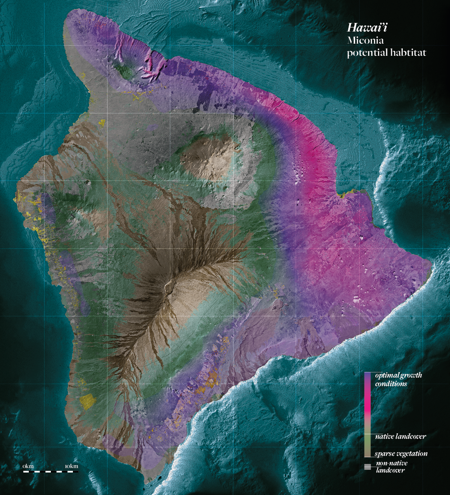
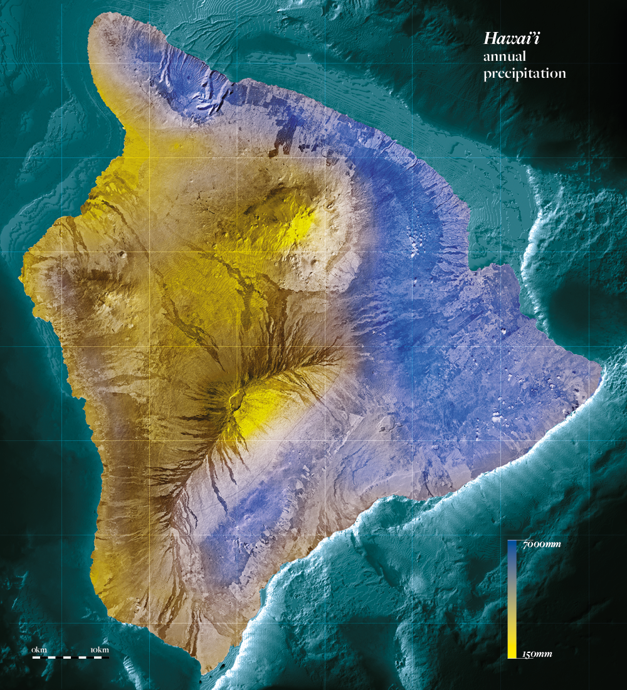
figure 2a. miconia habitat range, Hawaii // figure 2b. Hawaii annual precipitation, 2023
Noah:
Hmmm, well maybe now there will be some contrast in the Kudzu sea?
Ella:
(shakes her head) This species might be able to gain ground on the Kudzu, and it might even cancel out some of the few positive effects the Kudzu do bring.
Noah:
That is hard to imagine, how much worse can it get?
Ella:
Both The Miconia and the Kudzu shade out other species, but the miconia also have a tendency to erode the land, whilst the Kudzu was used in the past as a way to prevent erosion. The miconia accelerate soil erosion because their presence limits other rooted life and their leaves collect the rain to make bigger drops.“Temporal fluctuations in abundance and size of the giant jellyfish Nemopilema nomurai medusae in the northern East China Sea, 2006–2017” - Satoshi Kitajima, Toru Hasegawa, Koh Nishiuchi, Yoko Kiyomoto, Takeshi Taneda & Haruya Yamada (2020)
Noah:
This kind of news always makes me so gloomy…
Ella:
I do understand how you feel, but there is something you can do!
Noah:
Wow, wait a second there, “Miss Pest Control”. (smiles broadly) I came here to do my job, not to get another unpaid side hustle.
Ella:
Awww, come on, I just need someone to spread around some butterfly eggs between the islands, they don’t weigh a lot and I will make sure to pack them safely! You always deliver to specific delivery points, right? I could meet you there, give you the leaves with eggs on them. Then you just staple these leaves to some miconia’s on the next island, easy-peasy.
Noah:
And why would this be necessary?
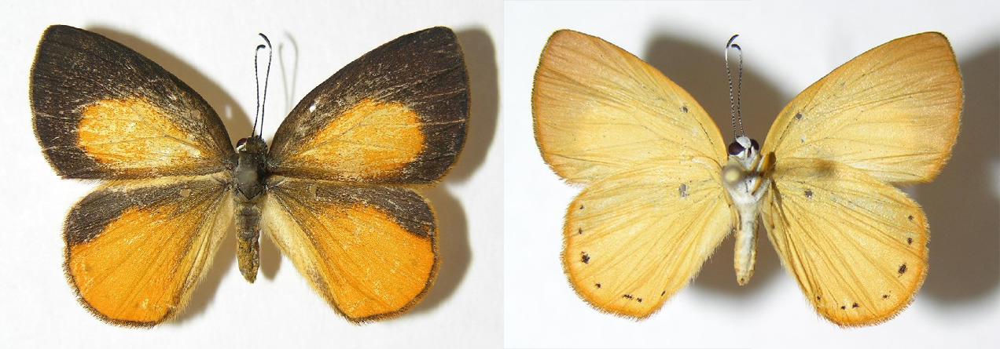
Euselasia chrysippe (Costa Rica)
Ella:
Oh yes of course, I forgot to tell you; Euselasia chrysippe (Lepidoptera: Riodinidae) is a small butterfly whose caterpillars feed on several miconia species in its native Costa Rica17. All of which are considered invasive in Hawaii. Since the caterpillars can’t survive on any plant that is native to the ecosystem, this would make the ideal “pest control”.
Noah:
And, why would I help you?
Ella:
I’ll give you a royal tip and you will be contributing to a greater cause of course!
Noah:
Ah yes, a greater cause… (shrugs) Fine, I will give it a try for a little while. But you better be in time, I won’t be waiting around after my delivery gets picked up.
Ella:
Great! Here is my number, text me when you come to the island!
After an hour of searching, she found the goat, which was contently chewing on some Kudzu flowers. She produced a sigh of relief and brought the goat back to the herd. Wild goats are some of the most destructive and invasive herbivores that Hawaii is rich.“Temporal fluctuations in abundance and size of the giant jellyfish Nemopilema nomurai medusae in the northern East China Sea, 2006–2017” - Satoshi Kitajima, Toru Hasegawa, Koh Nishiuchi, Yoko Kiyomoto, Takeshi Taneda & Haruya Yamada (2020)
They came when Ella’s ancestors, the Polynesians, first inhabited the Islands and are responsible for many extinct native flora and in extension, fauna. There are some programs to eradicate the feral Goats on Hawaii, but Ella always tried to save these goats by taking them into her herd when she has less than seventeen. This is not just an effective number of goats when your goal is to travel around and remove the Kudzu, but it is also the amount of Lady beetles that Albert Koebele introduced to Hawaii, succeeding to keep tabs on a number of pests. Koebele was Ella’s personal hero, a pioneer within this important branch of entomological work in Hawaii.“Temporal fluctuations in abundance and size of the giant jellyfish Nemopilema nomurai medusae in the northern East China Sea, 2006–2017” - Satoshi Kitajima, Toru Hasegawa, Koh Nishiuchi, Yoko Kiyomoto, Takeshi Taneda & Haruya Yamada (2020)
The resilience of an ecosystem in withstanding invasive forces, is strongly linked to its biodiversity.“Temporal fluctuations in abundance and size of the giant jellyfish Nemopilema nomurai medusae in the northern East China Sea, 2006–2017” - Satoshi Kitajima, Toru Hasegawa, Koh Nishiuchi, Yoko Kiyomoto, Takeshi Taneda & Haruya Yamada (2020)
To compensate for the losses of native organisms, Ella believed that it was essential to introduce alien species to help maintain some kind of harmony within this interwoven collection of organisms, that she called home.
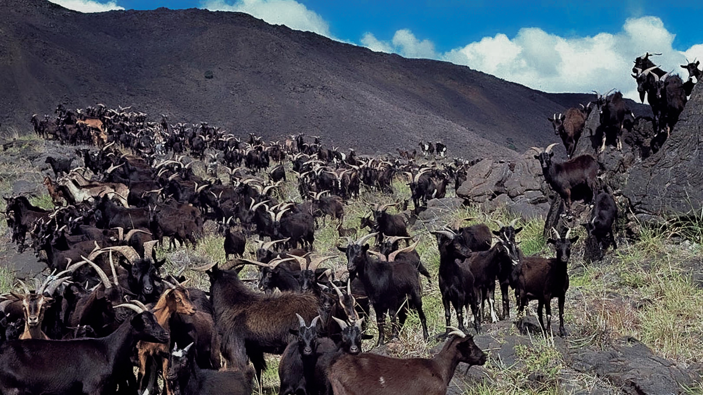
Feral goats (Hawaii)
One week later at the same beach.
Noah:
There she is! How are the goats?
Ella:
Aloha, the goats are well. Are you in a rush?
Noah:
No, why?
Ella:
I wanted to show you a map, so you understand what good places are to put the caterpillars. You are from O’ahu, Right?
Noah:
Yes, go ahead.
Ella:
Alright then. (Ella grabs a map from her bag and places it onto the sand)
This is a map of the potential range of Miconia Calvescens. Do you see how this spot around Kahana Valley is more saturated?
Noah:
(nods)
Ella:
That area has the highest miconia density because it catches the most rainfall of the island and the land is relatively flat compared to areas with similar rainfall. If you drop the eggs off there, they should be able to become butterflies and lay eggs of their own. Together they can greatly reduce the miconia’s ability to shade out other plants and reproduce.
Noah:
And this is not going to lead to some kind of unforeseen consequences in the near future? If you look at the disasters in Australia after the introduction of the Cane Toads -a species that originates in Hawaii btw-, as a biological control on sugar cane farms, the risk is quite apparen“Temporal fluctuations in abundance and size of the giant jellyfish Nemopilema nomurai medusae in the northern East China Sea, 2006–2017” - Satoshi Kitajima, Toru Hasegawa, Koh Nishiuchi, Yoko Kiyomoto, Takeshi Taneda & Haruya Yamada (2020)
Ella:
Tracy Johnson, a Research Entomologist at the Institute of Pacific Islands Forestry once answered this question in a proposal for the introduction of this butterfly: “There is no action that has consequences that are completely predictable, and thus there is uncertainty associated with any proposed action, including this one. (…) Uncertainty in the case of the proposed biocontrol release has been significantly reduced through decades of rigorous testing of the biocontrol agent. When weighed against the certainty of continued threat miconia poses to Hawaiian forests and resources, the level of uncertainty associated with the proposed action is found to be acceptable.” I read through the proposal/research and the responses of the many governmental and environmental organizations. The plan to introduce the species was approved but politics got in the way. The first research into the Euselasia chrysippe as a biocontrol measure for the miconia that I could find, was published in 2009. It was approved in 2022 “Temporal fluctuations in abundance and size of the giant jellyfish Nemopilema nomurai medusae in the northern East China Sea, 2006–2017” - Satoshi Kitajima, Toru Hasegawa, Koh Nishiuchi, Yoko Kiyomoto, Takeshi Taneda & Haruya Yamada (2020)
but the funding was cut after a couple of years. Regional costs of invasive species removal were rising “too fast”, and the carbon transition had priority, so here I am. (Ella laughs)
Noah:
Okay, seems legit. One last question, and please don’t get mad, your project just really made me wonder about some things. If the miconia outcompetes the native plant life, and if it is naturalized into our ecosystem. Why bother? The currents of the sea, together with the numerous bird species that inhabited Hawaii have always brought new species to the island. How long does a species have to be here before they are no longer considered invasive?
Ella:
The focus has been on preservation in a broader sense, To be invasive, a species must adapt to the new area easily. It must reproduce quickly. It must harm property, the economy, or the native plants and animals of the region.“Temporal fluctuations in abundance and size of the giant jellyfish Nemopilema nomurai medusae in the northern East China Sea, 2006–2017” - Satoshi Kitajima, Toru Hasegawa, Koh Nishiuchi, Yoko Kiyomoto, Takeshi Taneda & Haruya Yamada (2020)
Noah:
Do we not fit most of these criteria? What about the crops we sow? Who are we to intervene in evolution, what makes this case different?
Ella:
The plant originally was brought to Hawaii for its beauty, that is how many invasive species get dispersed over the world. Pets and houseplants that leave the boundaries of their intended habitat. The devastation they cause is our responsibility, we intervened by moving them in the first place.
Noah:
To me it seems like the aesthetical appeal of a species for humans has simply become a more prominent factor in their dispersion over the world. The species you classify as invasive are the dynasties of our time. The jellyfish had their own dynasty over the sea’s eons ago, they have just come to reclaim their territories. The miconia may be new on the Hawaiian islands but for only 11,8 percent of species in Hawaii we can’t trace their origin back to the continents.“Temporal fluctuations in abundance and size of the giant jellyfish Nemopilema nomurai medusae in the northern East China Sea, 2006–2017” - Satoshi Kitajima, Toru Hasegawa, Koh Nishiuchi, Yoko Kiyomoto, Takeshi Taneda & Haruya Yamada (2020)
So maybe some of these are truly “native” to the island but even that is not confirmed. The miconia are here now, they will never truly leave the island and containing their numbers is like sculpting clay amidst the currents. Don’t you think you are attempting to uphold an impossible status-quo?
Ella:
(shakes her head and sighs) Just go there and see, we can talk more next time. Have you ever explored the area?
Noah:
(nods)
Ella:
You can go to the Kahana bay and follow the river upstream; there you should find plenty of miconia. Good luck and thanks for doing this!
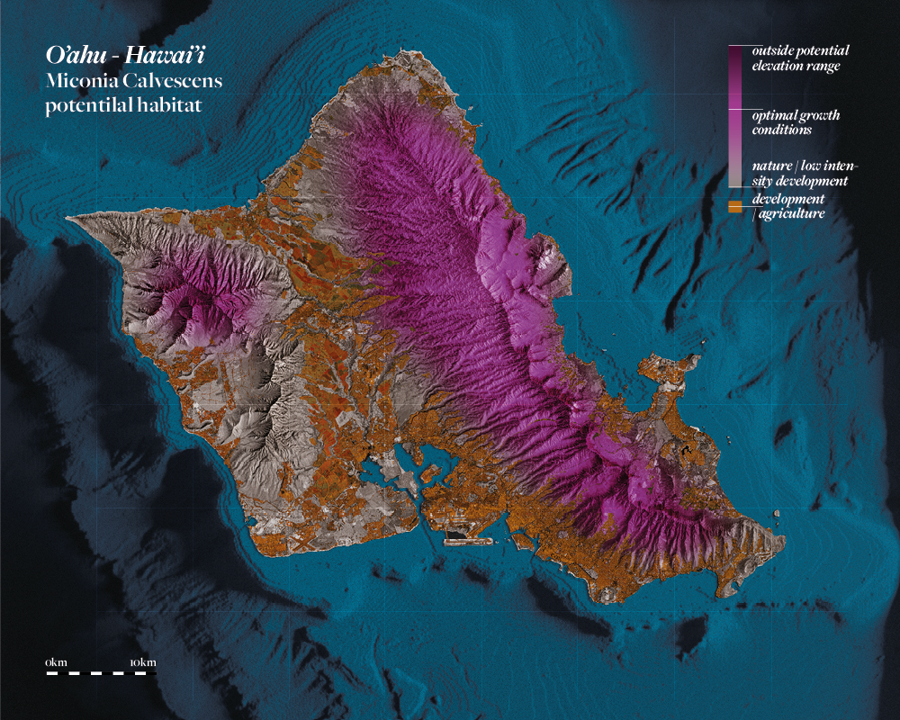
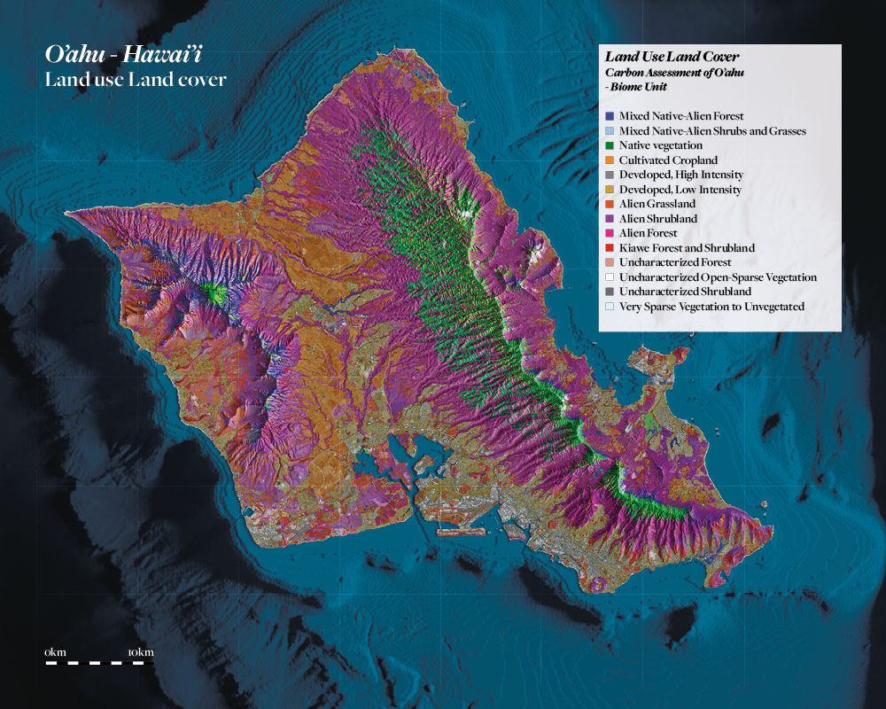
figure 3a. Kudzu habitat range, Oahu, Hawaii // figure 3b. Hawaii, Natural and Working Lands Land cover, 2022
The yellow butterfly in the Miconia Forest
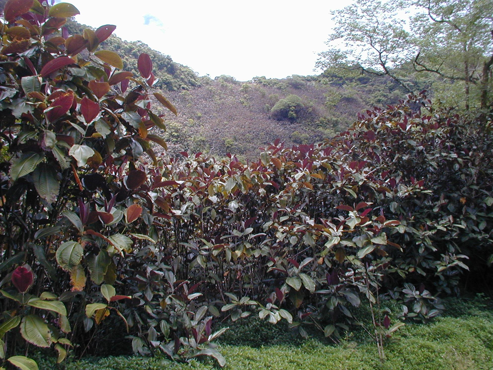
Miconia Calvescens forest (Tahiti, 2009)
After surfing to Kahana bay and traveling upstream, Noah reached a miconia forest. He hadn’t questioned Ella’s words but this was beyond what he had imagined. He had seen patches of the plant in the past and on his journey upstream but the miconia forest stretched as far as his eyes could see. He stapled the leaves to some of the plants and went on his way.
This process of surfing upstream and delivering eggs continued for a couple more weeks. He had not found the courage to re-open their conversation, Ella had grown cold nearing the end and on top of that, he was starting to feel quite uneasy, about these plants that were ominously glooming over him, every time he came to drop off the eggs.
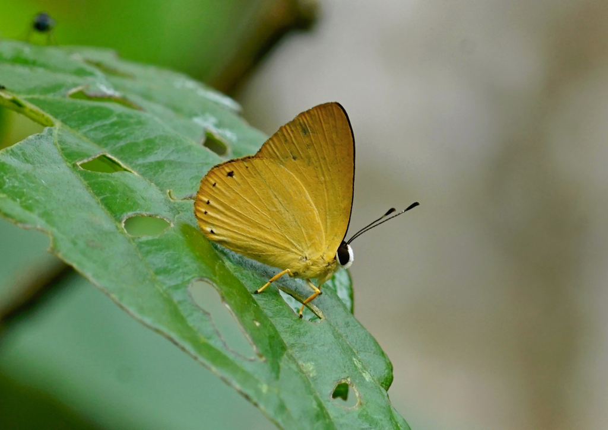
Euselasia chrysippe (Costa Rica)
One day, going through the usual routine, he grabbed one of the leaves to attach the eggs, but as the movement traveled through the other miconia, a cloud of yellow butterfly flew out of the plants. Their bright yellow color, a stark contrast with the purple and green of the surroundings. To Noah it seemed like the plant that normally carried such modest flowers, was finally blooming.
Noah:
Do you remember the discussion we had when you gave me the first butterfly eggs, and how you told me to go and see?
Ella:
Yeah?
Noah:
Well, I did, and it made me think. I have seen what this invader has done to our home and recognize the beauty of your endeavor. But it is a mere drop on a hot plate. You can only do this because you can afford to, and I can only help you because I have no family to feed. For the change that is necessary however, we need everyone. But one can’t expect individuals to break the chains of their economic limitations or to give up on essential goods just to minimize their “ecological footprint”. Minimizing one’s footprint is a hobby of the rich, who can afford the extra expenses of a “sustainable lifestyle”. Most people on our planet are dealing directly and indirectly with the messes of colonialism and the changes in their climate. Both of which, have been caused by the drivers of the Capitalocene. Countless wars are being – and have been – fought, as a consequence of the waves they have released upon the world.
How can we possibly achieve anything significant in this system, that encourages people to widen the gap between the rich and the poor, between the self and the other -both human and non-human-. How can we expect an individual to rebel against these currents if they are bailing water from their own ships?
Ella:
Adrienne Maree Brown once wrote: “I often feel I am trapped inside someone' else's imagination, and I must engage my own imagination in order to break free.” “Temporal fluctuations in abundance and size of the giant jellyfish Nemopilema nomurai medusae in the northern East China Sea, 2006–2017” - Satoshi Kitajima, Toru Hasegawa, Koh Nishiuchi, Yoko Kiyomoto, Takeshi Taneda & Haruya Yamada (2020)
It seems to me, like you have lost yourself in someone else’s imagination, conforming to their ideas of what we can and cannot achieve. Reclaim your imagination, use it to shift the discourse! The meaning that we give to concepts like the invasive is not static, it gets temporary form through discourse and flows through every individual differently. But you, like no other, should understand that even though you can’t prevent the water from raining down on our mountains, or from finding its way to the ocean, we can still shift its currents. One can change the journey that the water takes from the mountains, trough the rivers and finally into the sea. Trough the means of man-made structures, humans have been able to force these shifts, but there are other ways. In the Yellowstone National Park for example, re-introducing wolves has changed the ratio of different species within that ecosystem, radically increasing forest growth, eco diversity and eventually, the physical route of the rivers.“Temporal fluctuations in abundance and size of the giant jellyfish Nemopilema nomurai medusae in the northern East China Sea, 2006–2017” - Satoshi Kitajima, Toru Hasegawa, Koh Nishiuchi, Yoko Kiyomoto, Takeshi Taneda & Haruya Yamada (2020)
On Hawaii, the shifting rivers are now caused by the miconia and these shifts lead to incredible losses for Hawaii’s and in extension, the world’s biodiversity. But I don’t want to preach fear. Normally I try not to discuss climate change with the people I see regularly, when I do, I just can’t help but make everyone “gloomy”, as you once put it.
I once read an essay by Anna Tsing, in which she stated the following: “Delight makes an impression: an impression of place. The very excitement of my senses commits to memory the suite of colours and scents, the angle of the light, the scratching briars, the solid placement of this tree, and the rise of the hill before me.” “Temporal fluctuations in abundance and size of the giant jellyfish Nemopilema nomurai medusae in the northern East China Sea, 2006–2017” - Satoshi Kitajima, Toru Hasegawa, Koh Nishiuchi, Yoko Kiyomoto, Takeshi Taneda & Haruya Yamada (2020)
That is what I want to provoke. The Euselasia chrysippe are my humble attempt to invoke this “delight”, attempting to show the Hawaiians that trough rigorous study of life’s interconnections and dedication, we can shift the currents of the Capitalocene.
Noah:
I am glad that you found a way to contribute to the ecosystem of your life, but it is easier when you look up at the heavens to see the start of the waters journey, I witness where it ends, and what humanity does to it. It is not for naught that Elizabeth Kolbert wrote: “The current extinction has its own novel cause: not an asteroid or a massive volcanic eruption but "one weedy species.”” In her book, The Sixth Extinction: An Unnatural History, she argues that the Earth is in the midst of a modern, man-made, sixth extinction, referring to our species with a term normally reserved for invasive organisms like the miconia.27 Your life is on land, where things are tangible. You can set a target and dedicate your life to its eradication, but my life is in the sea. In the sea there is just the Jellyfish, floating around in a slurry of plastic, suffocating the local marine life. But the jellyfish are not to blame for their presence and removing them is not an option. So, who is my target, Ella? Is it the people who let their plastic invade the seas? Or those that release toxins into our oceans? Maybe the people that ate the fish, the one’s that took the fish, scraped the sea floor, and left their nets there? All of these people have in some way contributed to the problem. The blooms won’t stop until the world changes, there is nothing I can do about that.
Ella:
Most of Hawaii’s “native” plant species came from the seas, seeds drifting from the continents and finding their way here. Sometimes new species would disrupt, and sometimes they would bring relative balance. Together with the birds and the wind, the sea brought the ancestors to almost all of Hawaii’s unique species, slowly growing and shifting the ecosystem. But nowadays the bird populations dwindle and the sea only brings plastic. Meanwhile humans are spreading plants around the world accidentally, or for the simple reason that they look pretty in their botanical gardens or on their lawn. Our ecological memory is fading and with it, nature’s resilience to deal with all of their invaders. If we don’t help our environment adapt to changes set in motion a long time ago, we will lose more biodiversity than our species will ever witness again.
The change you are speaking of however, is already here. Do not underestimate what we have learned in the face of this catastrophe, and how many dedicated people use this knowledge, to provoke change. You might not have helped the sea directly, but you are already part of a new wave. Carrying a little bit of the ocean’s burden, by taking on a part of her role, she was no longer able to fulfil. Nudging our ecosystem in the right direction, by helping me spread this small, yellow butterfly.